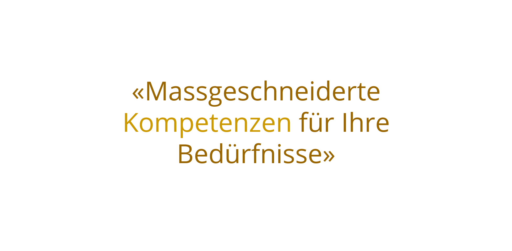
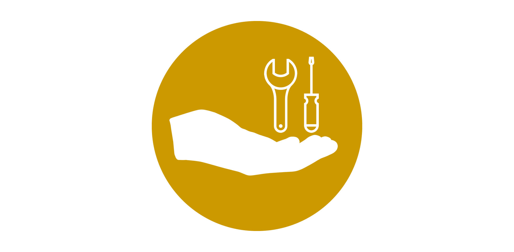
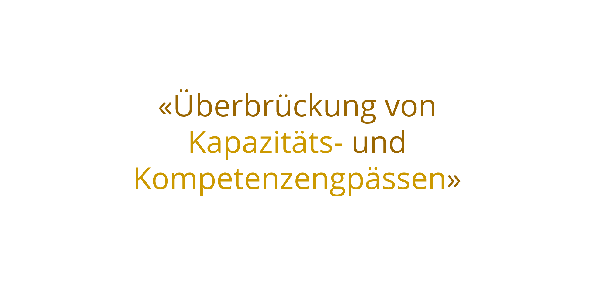

SERVICE
Wenn es brennt, sind wir zur Stelle - agieren statt reagieren
Ihr Geschäftsalltag wird von stetig wachsenden Herausforderungen bestimmt. Immer häufiger und immer schneller müssen Sie Anpassungen vornehmen, Projekte umstrukturieren und Geschäftsmodelle neu ordnen. Hinzu kommen unvorhergesehene Projekte, welche die bestehende Organisation belasten. Zur Abdeckung genau solcher Engpässe und zur Unterstützung bei kurzfristigen Personalausfällen im Projektmanagement, in der Akquisition oder für eine fundierte Zweitmeinung bieten wir Ihnen unsere Dienstleistungen als verbindendes Element an.


Wir sind spezialisiert auf Dienstleistungen für öffentliche wie private Kunden und bieten den kompletten Bau-und Management-Support an. Unsere Dienstleistungen Planung
o Technische Machbarkeit / Variantenstudium
o Unterstützung Bewilligungsverfahren
o Verifizierung Bauablauf & Bautermine
o Ausschreibungen (Leistungsverzeichnisse)
o Kostenbudget
o Rahmenprogramme
Akquisition
o Kalkulation
o Technische Berichte / Werkvertragsanalysen
o Bauablaufplanungen / Variantenstudium
o Terminprogramme
Projektabwicklung
o Projektleitungen & Bauführungen
o Operatives Controlling
o Support
o Umweltberichte
o Kontroll- und Prüfplan
Ihr Mehrwert
o Unterstützung bei der Abdeckung von personellen Kapazitäts- und Kompetenzengpässen
o Gezieltes, fundiertes Knowhow und erprobtes Können zu tragbaren Kosten
o Massgeschneiderte Lösung
o Persönliche Erfahrungen und Referenzen
Brücken überspannen Täler, überqueren Hindernisse und verbinden Lebensräume. Sie prägen mit ihren mannigfaltigen Erscheinungsformen oftmals entscheidend das Bild einer Landschaft oder einer städtischen Umgebung. Brückenbauwerke stehen für den Stand der Technik, zeugen von ausserordentlicher Bau- und von herausragender Ingenieurbaukunst. Als langjährige „Brückenbauer“ verfügen wir über entsprechend fundiertes Know-how und in der Praxis erprobtes Können. Unsere Dienstleistungen
o Bauherren- und Ingenieur-Beratungen
o Support bei der Akquisition von Brückenbauwerken und Lehrgerüstbauten
o Projektmanagement & Projektcontrolling
Ihr Mehrwert
o Gezieltes, fundiertes Know-how und erprobtes Können zu tragbaren Kosten
o Unterstützung bei der Abdeckung von personellen Kapazitäts- und Kompetenzengpässen
o Massgeschneiderte Lösungen
o Unsere Erfahrungen und Referenzen
Bereits die alten Römer waren wahre Meister im Lehrgerüstbau. Das Lehrgerüst bildet die Basis für die Erstellung der Brückengeometrie und bildet somit das Herzstück des Brückenbaus. Dank unserer Erfahrung und unseres Know-hows sind wir prädestiniert geeignete Lehrgerüste für Brücken zu planen und zu optimieren. Unsere Dienstleistungen
o Erstellen von Tragwerkskonzepten, Bauablaufoptimierungen
o Erarbeitung von Angeboten und Technischen Berichten
o Beratung in Konzeption und Bauverfahren
o Support in Akquisition und Ausführung von Lehrgerüstbauten
Ihr Mehrwert
o Knowhow & Referenzen der Schlüsselpersonen
o Engineerings-Kompetenz basierend auf interner Kompetenz und externen Partnerschaften
o Hohe Ausführungskompetenz
Unsere langjährige Erfahrung im Umgang mit Turnaround-Situationen sowie Reorganisationen bilden den Grundstein für eine unabhängige Unterstützung im Aufbau, der Reorganisation und der Entwicklung von neuen Unternehmens- oder Bereichsstrategien. Unsere Dienstleistungen
o Begleitung und Planung von neuen Unternehmens- oder Bereichsstrategien sowie Umstrukturierungen.
Ihr Mehrwert
o Erfahrungen aus der Praxis in Planung und Umsetzung
o Unterstützung bei der Abdeckung von personellen Kapazitätsengpässen
o Fachspezifisches und differenzierendes Know-how
o Zusammenarbeit mit Furger Partner
Entstehen in der werkvertraglichen Abwicklung zwischen zwei Partnern Differenzen, müssen diese bereinigt werden. Die Hauptaufgabe eines Streitschlichtungsverfahrens besteht darin, den Parteien bei Konflikten konstruktive Lösungsvorschläge zu unterbreiten, um eine aussergerichtliche Einigung zu erzielen. Unsere Dienstleistungen
o Mitwirkung als Fachmann in Schiedsgerichtsverfahren
Ihr Mehrwert
o Praxiserprobte Erfahrungen in Differenzbereinigung und Streiterledigung